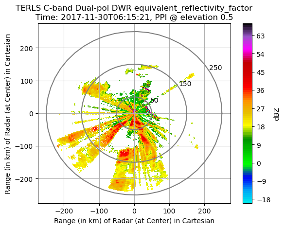
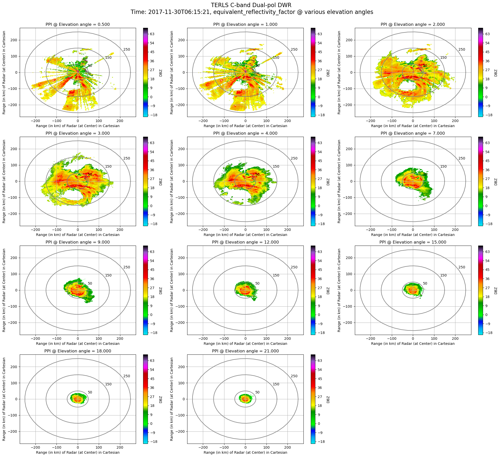
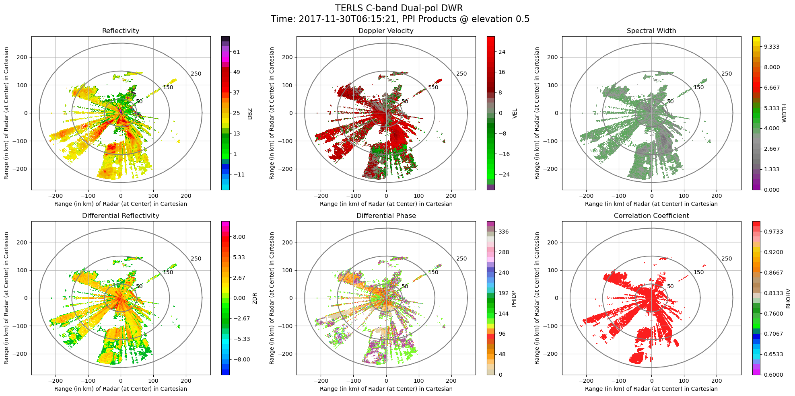

This cookbook provides information about how to work with pyiwr using Python.
Multiple output for single cell#
# Displaying multiple output of a single cell
from IPython.core.interactiveshell import InteractiveShell
InteractiveShell.ast_node_interactivity = "all"
Importing Essential Libraries#
import os
import pyiwr
import warnings
warnings.filterwarnings("ignore", category=DeprecationWarning)
## pyiwr is an advanced open-source library developed by researchers at the
## SIGMA Research Lab at IIT Indore. This powerful tool is designed to effortlessly
## convert raw ISRO Doppler Weather ## Radar (DWR) data files and Restructure
## dual-pol radar MOSDAC/corrected NetCDF files into Py-ART compatible NetCDF
## files. pyiwr also provides a range of useful tools and visualization functions to
## facilitate working with and analyzing weather radar data.
##
## If you use pyiwr in your work please cite it.
##
## Singh Nitig, Tyagi Vaibhav, Das Saurabh, Sahoo Udaya Kumar, Kundu Shyam
## Sundar. (2023). Python Indian Weather Radar Toolkit (pyiwr): An Open Source
## Python Library. Zenodo. https://doi.org/10.5281/zenodo.8192061
##
##
## You are using the Python ARM Radar Toolkit (Py-ART), an open source
## library for working with weather radar data. Py-ART is partly
## supported by the U.S. Department of Energy as part of the Atmospheric
## Radiation Measurement (ARM) Climate Research Facility, an Office of
## Science user facility.
##
## If you use this software to prepare a publication, please cite:
##
## JJ Helmus and SM Collis, JORS 2016, doi: 10.5334/jors.119Dual - Polarized DWR FILES
“Data Source : MOSDAC/SAC/ISRO. https://mosdac.gov.in”
Defining File Path
import os
file_path = 'D:\\test_data\\dwr'
file_list = os.listdir(file_path)
file_list
['RCTLS_30NOV2017_025502_L2B_STD.nc',
'RCTLS_30NOV2017_061521_L2B_STD.nc',
'RSCHR_11JUL2019_023140_L2B_STD.nc',
'RSCHR_24MAR2022_004350_L2B_STD.nc',
'RSSHR_11JUL2019_193241_L2B_STD.nc',
'RSSHR_11JUL2019_195339_L2B_STD.nc']
# Access files by indexing the list
# For example, to access the file in the list:
filenamel1 = os.path.join(file_path, file_list[6])
filenamel2 = os.path.join(file_path, file_list[7])
filenamel3 = os.path.join(file_path, file_list[2])
filenamel4 = os.path.join(file_path, file_list[3])
filenamel5 = os.path.join(file_path, file_list[4])
filenamel6 = os.path.join(file_path, file_list[5])
TERLS RADAR
Reading content of file and making radar object
radar = pyiwr.format_transform.correctednc(filenamel4, save_file=False)
radar.info()
Processing file: RCTLS_30NOV2017_061521_L2B_STD.nc
Date Time of Mosdac File RCTLS_30NOV2017_061521_L2B_STD.nc corrected successfully
altitude:
data: <ndarray of type: float64 and shape: (1,)>
_FillValue: nan
units: meters
altitude_agl: None
antenna_transition: None
azimuth:
data: <ndarray of type: float32 and shape: (3960,)>
_FillValue: nan
standard_name: ray_azimuth_angle
units: degrees
long_name: azimuth_angle_from_true_north
axis: radial_azimuth_coordinate
elevation:
data: <ndarray of type: float32 and shape: (3960,)>
_FillValue: nan
standard_name: ray_elevation_angle
units: degrees
long_name: elevation_angle_from_horizontal_plane
axis: radial_azimuth_coordinate
fields:
DBZ:
data: <ndarray of type: float32 and shape: (3960, 1600)>
_FillValue: 0.0
units: dBZ
standard_name: equivalent_reflectivity_factor
Polarization: Horizontal
coordinates: time range
VEL:
data: <ndarray of type: float32 and shape: (3960, 1600)>
_FillValue: 0.0
units: m/s
standard_name: radial_velocity_of_scatterers_ away_from_instrument
Polarization: Horizontal
coordinates: time range
WIDTH:
data: <ndarray of type: float32 and shape: (3960, 1600)>
_FillValue: 0.0
units: m/s
standard_name: doppler_spectrum_width
Polarization: Horizontal
coordinates: time range
ZDR:
data: <ndarray of type: float32 and shape: (3960, 1600)>
_FillValue: 0.0
units: dB
standard_name: log_differential_reflectivity_hv
Polarization: Horizontal and Vertical
coordinates: time range
PHIDP:
data: <ndarray of type: float32 and shape: (3960, 1600)>
_FillValue: 0.0
units: degrees
standard_name: differential_phase_hv
Polarization: Horizontal and Vertical
coordinates: time range
RHOHV:
data: <ndarray of type: float32 and shape: (3960, 1600)>
_FillValue: 0.0
units:
standard_name: cross_correlation_ratio_hv
Polarization: Horizontal and Vertical
coordinates: time range
fixed_angle:
data: <ndarray of type: float32 and shape: (11,)>
_FillValue: nan
units: degrees
instrument_parameters: None
latitude:
data: <ndarray of type: float64 and shape: (1,)>
_FillValue: nan
units: degrees_north
longitude:
data: <ndarray of type: float64 and shape: (1,)>
_FillValue: nan
units: degrees_east
nsweeps: 11
ngates: 1600
nrays: 3960
radar_calibration: None
range:
data: <ndarray of type: float64 and shape: (1600,)>
_FillValue: nan
standard_name: projection_range_coordinate
long_name: range_to_measurement_volume
units: meters
spacing_is_constant: true
meters_to_center_of_first_gate: true
axis: radial_range_coordinate
scan_rate: None
scan_type: ppi
sweep_end_ray_index:
data: <ndarray of type: int64 and shape: (11,)>
sweep_mode:
data: <ndarray of type: |S1 and shape: (11, 32)>
sweep_number:
data: <ndarray of type: int32 and shape: (11,)>
sweep_start_ray_index:
data: <ndarray of type: int64 and shape: (11,)>
target_scan_rate: None
time:
data: <ndarray of type: float64 and shape: (3960,)>
_FillValue: nan
standard_name: time
long_name: time_in_seconds_since_volume_start
units: seconds since 2017-11-30T06:15:21
calendar: gregorian
metadata:
instrument_name: TERLS C-band Dual-pol DWR
Created using: pyiwr (Indian Weather Radar) Module developed by Researchers at SIGMA Research Lab, IIT Indore
version: Version 1.0
title: TERLS C-band DWR data
institution: ISRO
references: Py-art_https://arm-doe.github.io/pyart/notebooks/basic_ingest_using_test_radar_object.html
source: DWR volume scan data
comment:
Conventions: CF/Radial
field_names: DBZ, VEL, WIDTH, ZDR, PHIDP, RHOHV
history: DWR mosdac files (.nc) data encoded into Py-ART compatible NetCDF file
volume_number: 0
platform_type: fixed
instrument_type: radar
primary_axis: axis_z
Visualization in Cartesian Plane
PPI Plot of any Radar Field at any given elevation angle
pyiwr.visualize.elevation(radar, field_name='DBZ', elevation_index=0, rings=True, grid=True,
range_in_km=True, save_image=False, img_name='terls_dbz0.png')

PPI Plots at all elevation angle of any Radar Field
pyiwr.visualize.all_elevation(radar, field_name='DBZ', rings=True, grid=True, range_in_km=True,
save_image=False, img_name='terls_dbzall.png')

PPI Plots of all Radar Fields at any given elevation angle
pyiwr.visualize.fields_elevation(radar, elevation_index=0, range_in_km=True, rings=True, grid=True,
save_image=False, img_name='terls_fieldall.png')

Reading content of file and making grid object
xg = pyiwr.format_transform.sweeps2gridnc(filenamel4, grid_shape=(81, 501, 501), height=20, length=250,
save_file=False)
xg
Processing file: RCTLS_30NOV2017_061521_L2B_STD.nc
Xarray gridding of volumetric sweeps of radar PPI scan file: RCTLS_30NOV2017_061521_L2B_STD.nc done successfully